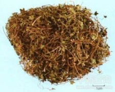

酢浆草

拼音
Zuò Jiānɡ Cǎo
别名
酸浆草、酸酸草、斑鸠酸、三叶酸
来源
酢浆草科植物酢浆草Oxalis corniculata L.的全草。四季可采，以夏秋有花果时采药效较好，除去泥沙，晒干。
生境分布
生于耕地、荒地或路旁。全国各地均有分布。
药材特点
多年生草本。茎匍匐或斜升，多分枝，长达50厘米，上被疏长毛，节节生根。叶互生，掌状复叶，叶柄长2.5～5厘米；托叶与叶柄连生，形小；小叶3枚，倒心脏形，长达5～10毫米，无柄。花1至数朵成腋生的伞形花序，花序柄与叶柄等长；苞片线形；萼片5，花瓣5，黄色，倒卵形；雄蕊10，花丝下部联合成筒；子房心皮5，5室，花柱5，离生，柱头头状。蒴果近圆柱形，长1～1.5厘米，有5棱，被柔毛，熟时裂开将种子弹出。种子小，扁卵形，褐色。花期5～7月。
性状
性状鉴别 为段片状。茎、枝被疏长毛。叶纸质，皱缩或破碎，棕绿色。花黄色，萼片、花瓣均5枚。蒴果近圆柱形，有5条棱，被柔毛，种子小，扁卵形，褐色。具酸气。味咸而酸涩。
性味
酸，凉。
功能主治
清热利湿，解毒消肿。用于感冒发热，肠炎，尿路感染，尿路结石，神经衰弱；外用治跌打损伤，毒蛇咬伤，痈肿疮疖，脚癣，湿疹，烧烫伤。
用法用量
0.5～2两；外用适量，鲜品捣烂敷患处，或煎水洗。
化学成分
茎叶含多量草酸盐。另有谓叶含柠檬酸及大量酒石酸，茎含苹果酸。
药理作用
1：对金黄色葡萄球菌有抗菌作用：对大肠杆菌则无效；此植物据云对羊有毒
2：同属植物毛茛酢浆草能伤害家畜肾脏：使血中非蛋白氮明显升高
摘录
《全国中草药汇编》